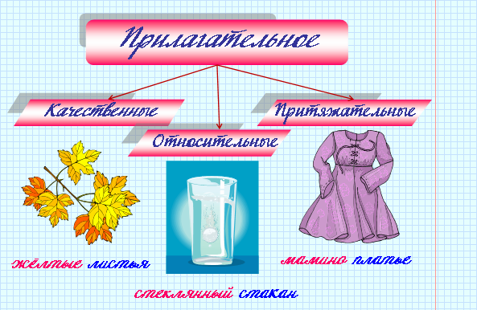

|
Имя прилагательное - это самостоятельная часть речи, которая обозначает признак предмета и отвечает на вопросы какой? чей? каков? |

 |
Чтобы правильно написать окончание прилагательного, нужно найти в предложении существительное, от которого оно зависит, и от этого существительного задать к прилагательному вопрос. Окончание вопроса подскажет, какое окончание писать. |
 |
Мы встретились на цветочной поляне (прилагательное цветочной зависит от существительного поляне, поэтому задаем вопрос от него: на поляне (какой?) цветочной). |
| Падеж | Единственное число | Множественное число | ||
| мужской род | средний род | женский род | ||
| Именительный | волчий хвост | волчь-е ухо | волчь-я нора | волчь-и следы |
| Родительный | волчь-его хвоста | волчь-его уха | волчь-ей норы | волчь-их следов |
| Дательный | волчь-ему хвосту | волчь-ему уху | волчь-ей норы | волчь-им следам |
| Винительный | волчий хвост | волчь-е ухо | волчь-я нора | волчь-и следы |
| Творительный | волчь-им хвостом | волчь-им ухом | волчь-ей норой | волчь-ими следами |
| Предложный | (о) волчь-ем хвосте | (о) волчь-ем ухе | (о) волчь-ей норе | (о) волчь-их следах |
| Падеж | Единственное число | Множественное число | ||
| мужской род | средний род | женский род | ||
| Именительный | мамин платок | мамин-о решение | мамин-а подруга | мамин-ы друзья |
| Родительный | мамин-а платка | мамин-ого решения | мамин-ой подруги | мамин-ых друзей |
| Дательный | мамин-у платку мамин-ому платку |
мамин-у решению мамин-ому решению |
мамин-ой подруге | мамин-ым друзьям |
| Винительный | мамин платок | мамин-о решение | мамин-у подругу | мамин-ых друзей |
| Творительный | мамин-ым платком | мамин-ым решением | мамин-ой подругой | мамин-ыми друзьями |
| Предложный | (о) мамин-ом платке | (о) мамин-ом решении | (о) мамин-ой подруге | (о) мамин-ых друзьях |